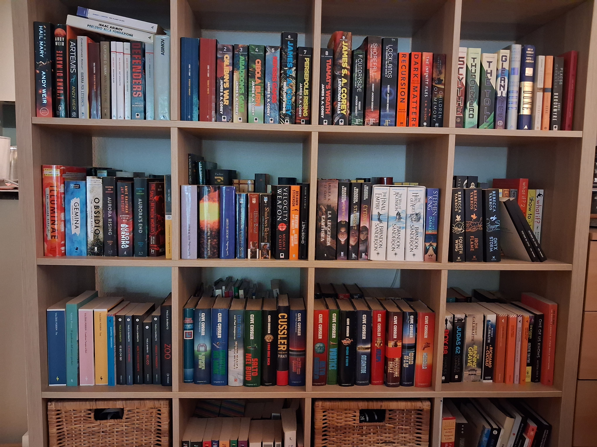

At Casa Donatalina, books are not destroyed

16 August 2026
On the one hand, there are companies buying books to destroy them after scanning them to train AI; on the other, there is a house with 6,000 books that nobody has any intention of destroying, selling or throwing away.
I have just read an article by the BBC about the rise in second-hand book sales, partly driven by artificial intelligence.
The reason is rather surreal: some companies buy large quantities of books, have them sent to specialised facilities where they are stripped of their covers and scanned, and finally destroy the physical copies. Books become data. Data becomes material for training artificial intelligence. And in the end, all that remains of the book is a digital trace.
It made me think of Casa Donatalina: our library contains around 6,000 books.
And I will never sell them.
Not because they are all valuable, ancient or impossible to find. Some are very old, others are very recent. Some we have read and reread; others we will probably never read at all. There are beautiful ones and rather ugly ones, important ones and completely forgettable ones.
But they are there.
There are the books that belonged to my parents. The ones bought during a trip, at a Festa de l'Unità, at a street market. The ones found by chance in a bookshop. The ones someone gave us as a gift. The ones that we read many years ago and that now remind us of who we were back then. The ones my mother rescued from a flood in the 1960s. The ones my father bought in Trento when he was studying Sociology.
A book is not just its content.
It is also the paper, the smell, a dedication on the first page, a folded page, an underline, a stain, a worn cover, a photograph tucked inside. It is the memory of when and why it came into the house.
An artificial intelligence can read the text of a book in a matter of seconds.
But it cannot know what that book meant to the person who read it.
I don't think digital technology is the enemy of books. Quite the opposite: I am glad that today we can preserve, search and share an enormous amount of knowledge without necessarily having a library of 6,000 volumes that gather dust, get forgotten on a table or a stool, are difficult to find, and absorb moisture.
But I still think there is something special about owning a book, holding it in your hands and knowing that someone before you read it, loved it, hated it, put it away, underlined it.
That is why, at Casa Donatalina, the books stay.
All 6,000 of them.
Safe.
And they will probably keep accumulating.
Because a house can have too many things.
But apparently, you can never have too many books.
And that is what I want to share with you on this website.
What is one book that simply cannot be missing from your home or your life?